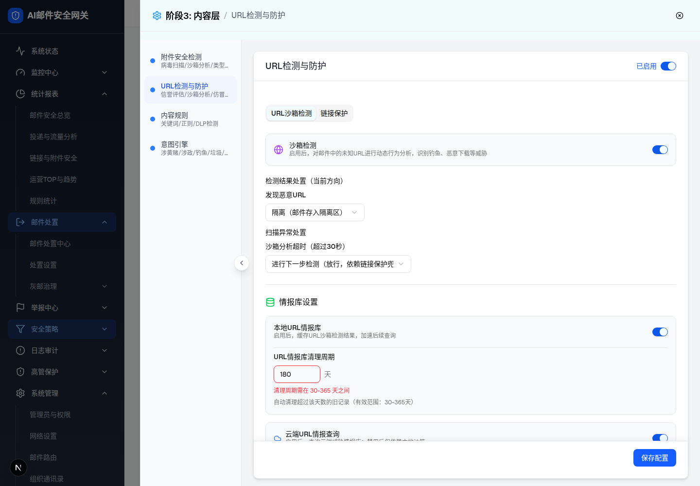
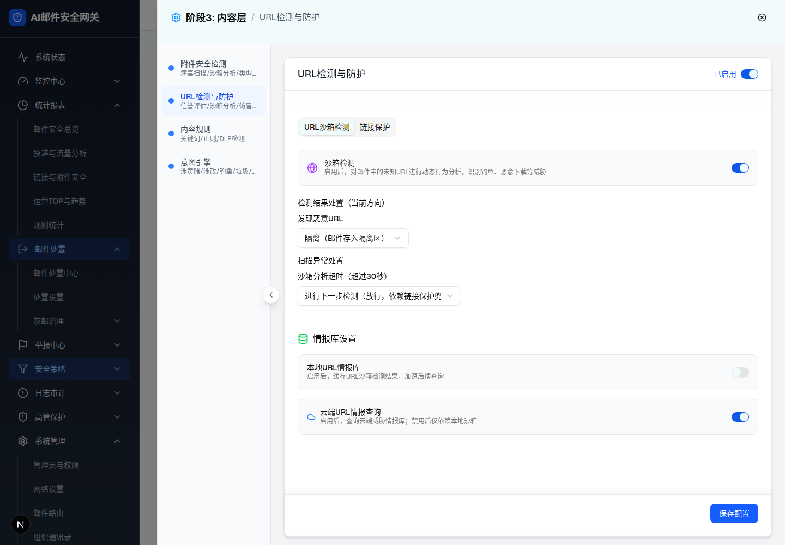
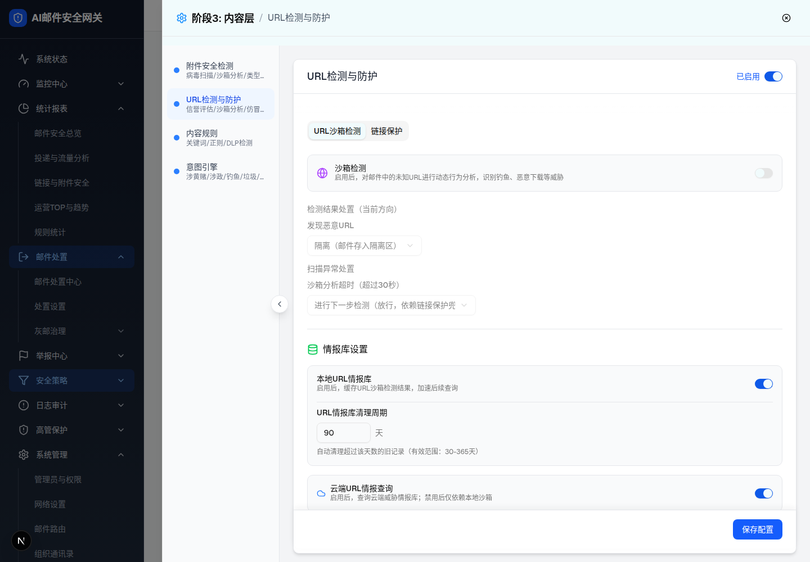

| 所属组件 | 2.3 URL沙箱检测 Tab（SandboxTab） |
| 主文件 | index.html |
| 触发路径 | 层级1 沙箱Tab默认态 → ① 清理周期输入非法值；② 关闭"本地URL情报库"开关；③ 关闭"沙箱检测"开关 |
| 截图 | screenshots/sandbox-cleanup-error.png、sandbox-local-intel-off.png、sandbox-switch-off.png |
浏览器验证的关键行为：输入 20（<30）后，输入框数值回弹为上次合法值 180（受控组件：非法值不写入 state），同时边框变红（border-red-500）并在下方显示红色错误文案。输入合法值（如 90）立即清除错误并生效；本地情报库关闭再打开后数值保留（90）。
试试输入 20 或 400（回弹+报错），再输入 90（清除错误）；关闭上方开关（隐藏整块），再打开（数值保留）。

| 输入 | 实际表现（浏览器验证） | PRD 要求 |
|---|---|---|
| 20（<30）/ 400（>365）/ 非数字 | 红框 + 红字"清理周期需在 30-365 天之间"；数值回弹为上次合法值；不写入配置 | <30、>365 同文案；非数字应为"请输入有效数字"（demo 统一为范围文案，差异 D-004） |
| 90（合法） | 错误消失，值即时写入配置（重开情报库后保留 90） | 保存成功无错误提示 |
| 清空 | NaN → 报错（demo） | PRD 要求恢复默认 180（差异 D-004） |
| 比对项 | demo 实际 DOM | 提取的 HTML 预览 | 是否一致 |
|---|---|---|---|
| 输入框 | value 回弹 "180"，class 尾部追加 w-24 border-red-500 | value 回弹 + .err 红框 | 一致 |
| 错误节点 | p.text-xs.text-red-500，文案"清理周期需在 30-365 天之间" | .err-text.show 同文案 | 一致 |
| 合法输入后 | value=90，无 text-red-500 节点 | 预览同步为无错误 | 一致 |
关闭"本地URL情报库"后，"URL情报库清理周期"整块（标题/输入框/说明）从 DOM 移除（条件渲染 {config.localIntelEnabled && ...}），并非置灰。上方 2A 预览的开关即可复现。

| 比对项 | demo 实际 DOM | 提取的 HTML 预览 | 是否一致 |
|---|---|---|---|
| 清理周期文本 | 关闭后 innerText 不含"URL情报库清理周期" | display:none 隐藏整块 | 一致（demo 为卸载，预览用隐藏等价复刻） |
| 数字输入框 | 关闭后 input[type=number] 不存在 | 隐藏后不可见不可交互 | 一致 |
| 重新开启 | 输入框重建且 value 保留（验证值 90） | 预览保留输入值 | 一致 |
关闭"沙箱检测"开关后，"检测结果处置 + 扫描异常处置"两个分组的公共容器加 opacity-50 pointer-events-none；情报库设置（本地/云端）不受影响，仍可交互。
切换"沙箱检测"开关：下方处置区透明度变化且不可点击，情报库开关不受影响。

| 比对项 | demo 实际 DOM | 提取的 HTML 预览 | 是否一致 |
|---|---|---|---|
| 置灰容器 | div.space-y-4.opacity-50.pointer-events-none，innerText 含"检测结果处置…发现恶意URL…扫描异常处置…" | .dimzone opacity .5 + pointer-events none，同文案范围 | 一致 |
| 情报库区 | 不含 opacity-50，开关可点击 | 独立块，不随沙箱开关置灰 | 一致 |
| 沙箱开关 | data-state=unchecked | aria-checked=false 灰色 | 一致 |